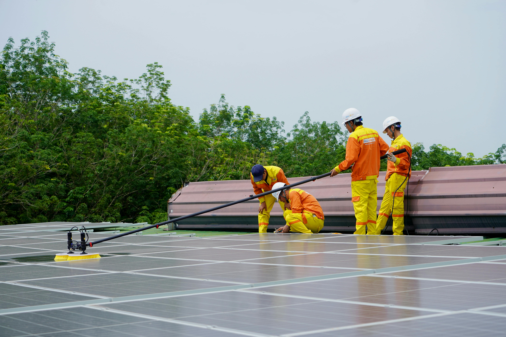

Generación de empleo local
Las energías renovables fomentan la creación de empleos directos (instalación, operación,
mantenimiento)
e indirectos (cadena de suministros, hotelería, alimentación); por ejemplo, se estima que en
Colombia
solo la energía solar creó alrededor de 4,9 millones de empleos en 2022, más de un tercio del
empleo total
en renovables. Proyectos comunitarios incluso generan mayores oportunidades que plantas
convencionales;
en energía eólica comunitaria se calcula un 27% más de empleos por kWh que las plantas de
carbón.

Mejor acceso a energía en zonas rurales
Instalaciones como mini-redes solares electrifican comunidades remotas, mejorando su bienestar.
En Kenia, zonas rurales conectadas a mini-redes solares vieron aumentar la productividad y
reducir el
uso de lámparas de queroseno, incluso cuadruplicando su ingreso medio. Además, organizaciones
como Solar
Electric Light Fund permiten que estudiantes puedan estudiar en la noche y comunidades acceder a
servicios
básicos mediante energía solar.
Reducción de costos a largo plazo
Las energías renovables, al operar sin combustible, ofrecen ahorros sostenibles. Comunidades
rurales
dejan de depender del caro diésel; por ejemplo, Galena en Alaska redujo el consumo de 100.000
galones
de diésel al año gracias a energía solar y biomasa, mejorando la estabilidad del servicio y
reduciendo
costos. Además, las comunidades con proyectos renovables logran reducir su costo energético
entre un
10% y 26% comparado con el modelo tradicional.

Programas de formación técnica
La transición hacia energías limpias crea demanda de habilidades nuevas; por ello, se
desarrollan
programas de capacitación especializados. Un ejemplo es el programa “MC3” en Texas (EE.UU.), que
formó
a personas en oficios eléctricos para trabajar en granjas solares. Otro ejemplo global es el de
las
“Solar Mamas”, mujeres rurales entrenadas por Barefoot College en India para instalar y mantener
sistemas solares, llevando electricidad segura a sus comunidades.